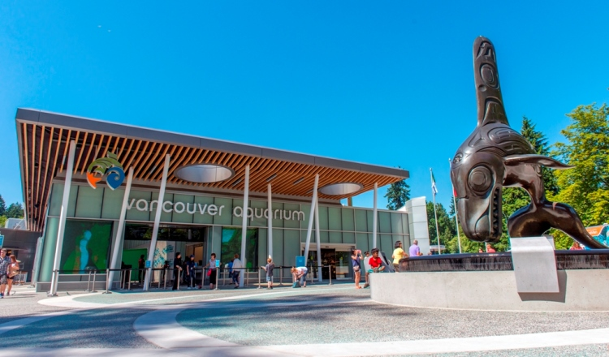

Stanley Park is one of the best tourist destinations in British Columbia and was rated the
world's best park in 2014. It is also Vancouver's largest and oldest park. With 400 hectares (1,000 acres)
in area, there are many activities to do such as visiting the largest aquarium in Canada, the Vancouver
Aquarium. If you do not have much time to tour, try to hike the 8.8km trail section of the seawall that surrounds
the park. You would be able to see the spectacular views of Vancouver, the Lion's Gate Bridge, and the North
Shore Mountains. Stanley Park attracts about eight million people per year and is one of the best tourist
destinations in Canada.

Exterior view of the Vancouver Aquarium.
For more information, please visit the city-run website.
Return to the homepage.
Next #4